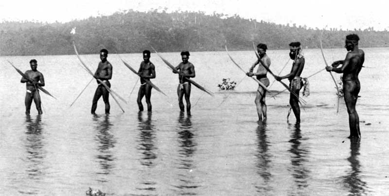

The Greatest Andamanese was once the most important population amoung varied tribes inhabiting the Andaman Islands. Their calculable population was 10,000 in 1789, their range had attenuated to 625 and by 1969 their number had decreased to 19 solely. As per the Census of 1971, only twenty-four of them survived in the tribe, however by 1999 their range has exaggerated to forty-one. The Administration of the Andaman Islands is doing its best to guard and preserve these tribes. These tribals are restored in an exceedingly tiny island named Strait Island and also these Great Andamanese are foragers. Today they eat rice, Dal Chapati ( Indian bread ) and also enjoy gourmet delicacies. The Great Andamanese are interested in hunting and also have a keen passion for social gatherings, wherein they prefer cooking traditional food items like fish, dugong, turtle, turtle eggs, crabs, roots and tubers. Occasionally they consume pork, Andaman water monitor lizard, etc. As aquatic people, they relish octopus, mollusks taken out from shell marine animals like turban shell, scorpion shell, sundial, helmet, trochus and screw shell besides various types of crabs and fish. Some of the Andamanese tribal folks cultivate vegetables and have established interest for poultry farms. As the tribal people are evolving and trying their hands on new things, they are also exposed to highly communicable diseases besides unhealthy drinking habits which of course was acquired after contact with the moribund urban dominant and advanced communities.
Onges are one in every of the foremost primitive tribes in India. They belong to the Negrito racial stock and that they are relegated to the reserved pockets each at Dugong dugon Creek and South Bay of very little Andaman Island. they're additionally decreasing in variety. They board in a distant corner of the country in an exceedingly tiny pocket they're the semi-nomadic tribes and totally passionate about the food provided naturally. They have now encountered the effect of outcasts. In the meantime endeavors of becoming friends with them have turned out to be fruitful. They have been provided with pucca hovel type houses, sustenance, garments, drugs, and so on by the Administration. Tribal people of Onges eat turtle, fish, roots and jack fruits and etc. Over the course of time, Onges have developed the skill for artistry and craft and can make their own canoes. A primary school has been functioning at the Dugong Creek settlement of Onges. This tribe has become laid back and dependent in their ways. Also, their rate of reproduction has become very low. Administration of Onges tribe built a primary school which is functioning at the Dugong Creek settlement. This clan has moved towards becoming laid back and subordinate in their ways. Additionally, their rate of multiplication has turned out to be exceptionally low.
Jarawas tribe is very friendly and seek medical assistance when required. They cannot make good canoes however they build rafts to cross the streams. The year 1974 was a landmark in the historical backdrop of Jarawas. Dropping of blessings was done in February and March 1974. After building a cordial relationship with Jarawas, the contact party of Administration was in touch with Jarawas very often and showered gifts like banana, coconut, and other fruits. As time progresses, the personal conduct standard of Jarawas has changed. Till the start of 1998, they stayed antagonistic, however at this point they are leaving the wilderness regularly and are getting to be friendlier. For nearly a year there's no incidence of the killing of villagers by the Jarawas. On the opposite hand, the Jarawas are commencing from their environment to combine with the native folks. After providing them with natural products, they are now given the freedom to live on their own and adapt to natural habitat. Separated for such a long time, the Jarawas generally give off an impression of being sound, with smooth skin, profound wavy hair, long and strong hands, and legs and solid bones. They are physically fit for hunting, chasing and fishing. Unlike, different tribes mention earlier, the Jarawas don't seem to be welfare dependent folks. As roving tribes subsisting on hunting, fishing and gathering activities, their ancient food articles incorporates boar (wild boar), turtles and their eggs, crabs and different shore animals, etc. wild pig fruits and honey.
The Sentinelese are the occupants of North Sentinel Island. The zone is around 60 Sq. Kilometers. They are most likely the world's solitary Paleolithic individuals enduring today without contact with some other gathering or network. They are considered as an off-shoot to the Onge Jarawa clans which have procured an alternate personality because of their residence in a disconnected and have lost contact with the principal clans. The Sentinelese are extremely antagonistic and never leave their Island. Little or nothing is understood concerning these hostile tribes.